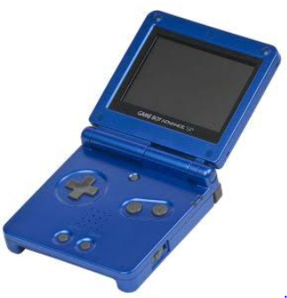

Background / History
The Game Boy is an 8-bit handheld game console developed and manufactured by Nintendo.
It debuted in Japan on April, 1989.
The original Game Boy is shown below:

Through the Years
Nintendo changed Gameboy's style over the year but its clean design and small size made it perfect for kids at home, on the road or at a friends house.

|

|
GameBoy Lives on eBay
GameBoys are no longer being made but you can find just about any GameBoy console and games you want on eBay or Amazon. This GameBoy comes with a charger and 2 games and is around $45 on eBay.

|